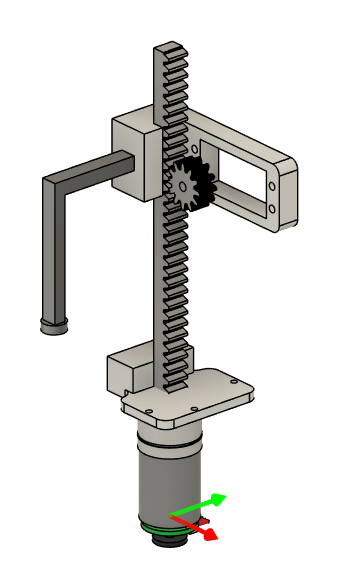
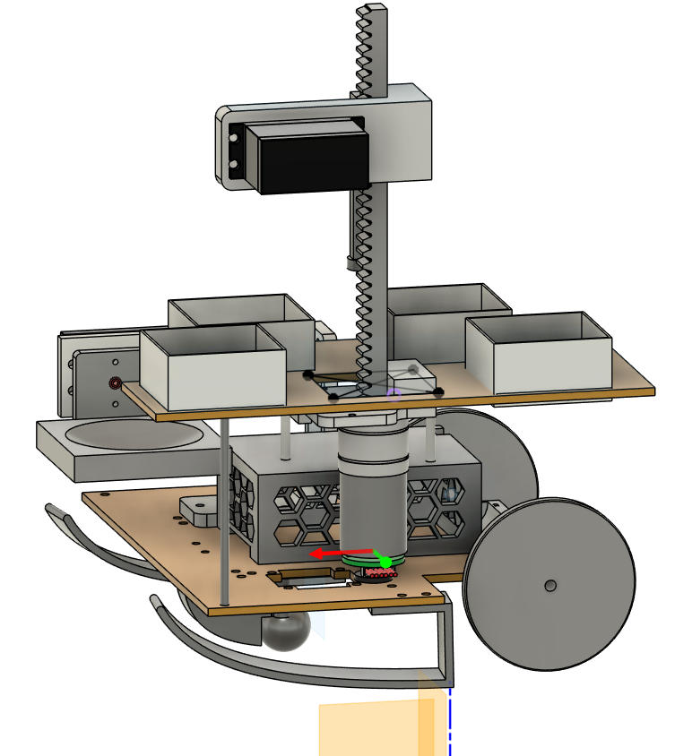
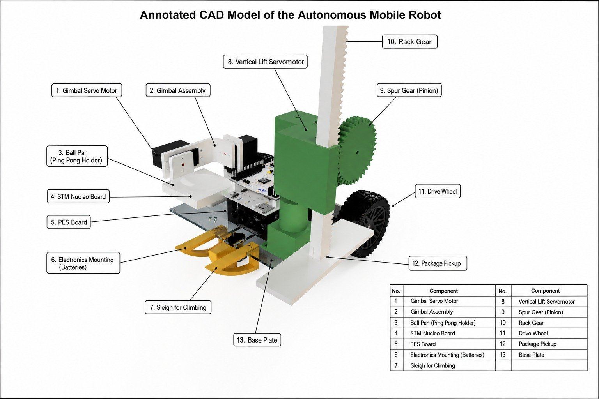
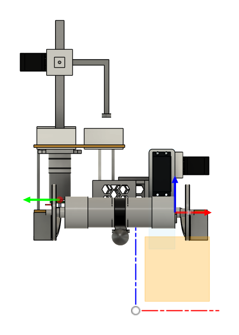

Autonomous Package Delivery Robot

The challenge
Build an autonomous mobile robot that navigates a predefined course, identifies package locations from colour markers, picks up packages, delivers them to the matching stations, and crosses an elevated obstacle while keeping a ping-pong ball balanced on its platform.
My role
I designed and 3D printed the robotic pickup arm and wrote the code that handles package pickup and placement. I also worked on the robot's embedded programming, control, sensor integration and autonomous behaviour.
Pickup arm
The arm is a 360° turret on a rotating base, driven by a Futaba S3001 servo, with a rack-and-pinion lift: a second servo turns a spur gear along a printed rack to raise and lower the package pickup. I sized the gear ratio, calibrated the servo, and fixed a start-up fault where the arm snapped to zero when the servo was enabled.


How the robot works
- Line following using a sensor array
- Colour-based package and station identification
- A finite state machine runs the mission: initialise, follow line, turn, stop at station, pick up, drop off, finish
- DC motor control with encoder feedback
- An IMU-based gimbal keeps the ball platform level while the robot climbs and crosses the obstacle

